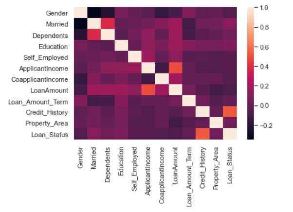

Exploratory Data Analysis(EDA)


30% of loan applicants in the dataset were denined and 70% were approved. Of those that were approved, 85% of those applicants were male. 22% of loan applicants did not graduate. There is a correlation between the rate of approval and the penetration of laon applicants who did graduate.


Our box plot charts helped us to understand where our outliers exist within our dataset and across our correlated metrics. The applicants who graduated do not have a standarized mean and a great range of outliers with where these graduates are positioned with their annual income. There are similarities with where the mean falls with our dataset's loan applicant's income and redquested loan amount. The means are similar and outlier range is limited.
The heatmap above was used to check for multicollinearity. The heat map does not indicate a high correclation between any of the loan attributes. This indicates no possible problem of the multicollinearity nor a need for further investigation.